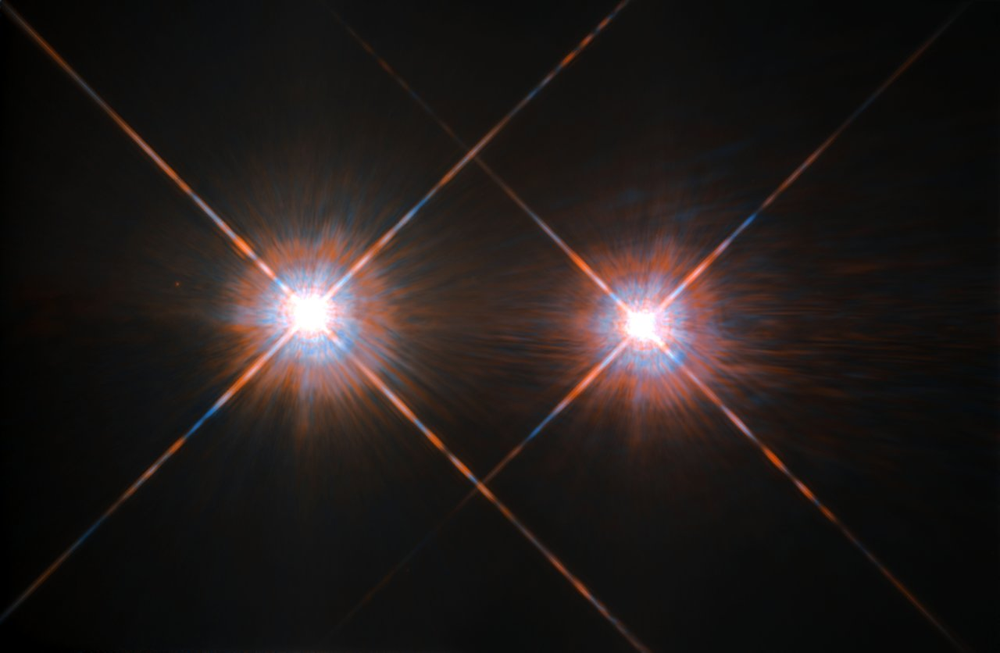
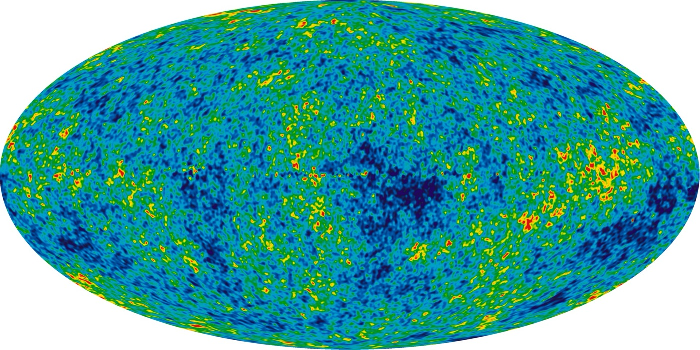
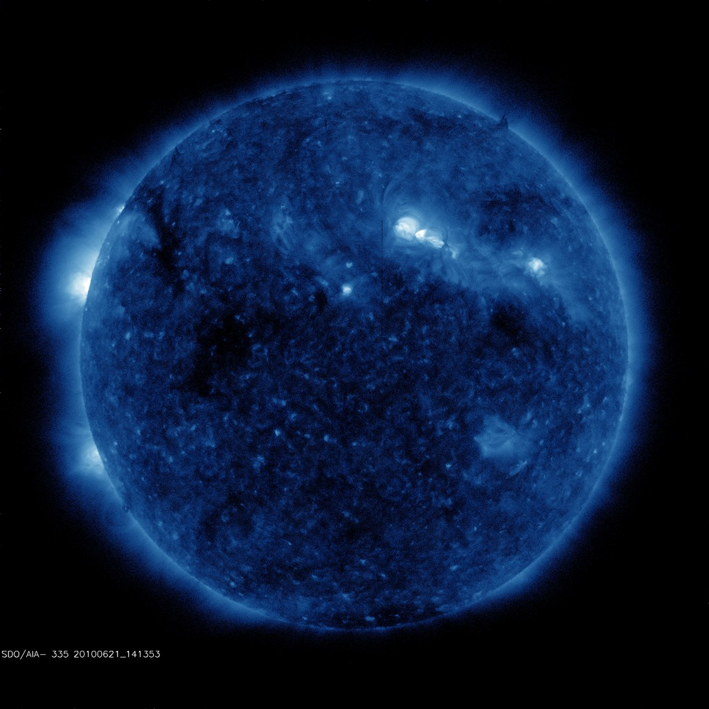
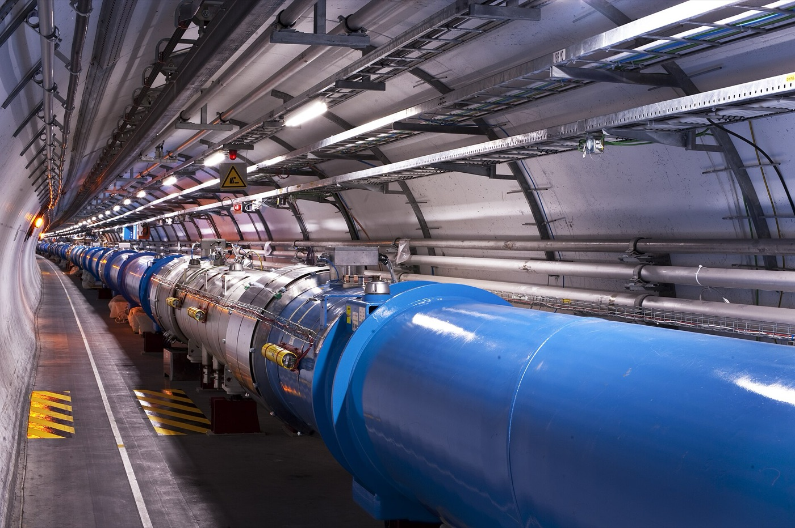
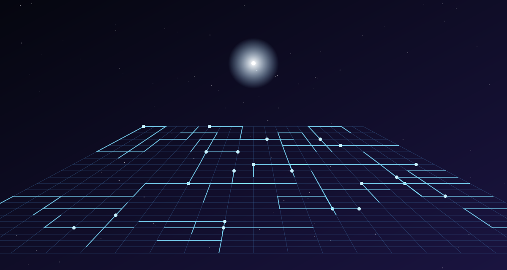

Наука в книге: правда или вымысел
Лю Цысинь — инженер по образованию, и в «Задаче трёх тел» много настоящей науки, перемешанной с выдумкой так плотно, что граница не всегда видна. Здесь — что в книге правда, что опирается на реальные идеи, а что придумано для сюжета.
правда 3 · отчасти правда 7 · вымысел 2

правда
Задача трёх тел
Настоящая и знаменитая проблема небесной механики. Движение двух тел под действием тяготения Ньютон решил полностью: они ходят по эллипсам вечно. Но стоит добавить третье тело — и общей формулы, описывающей движение на любое время вперёд, не существует: в 1890 году Анри Пуанкаре показал, что такие системы в общем случае хаотичны — ничтожная разница в начальных условиях со временем меняет всё. Частные устойчивые решения всё же есть: Лагранж нашёл их ещё в 1772 году, в 1993-м открыли изящную «восьмёрку», по которой три равные звезды гоняются друг за другом, а в 2010-х компьютерный поиск дал сотни новых семейств. Но планета в такой системе, как в игре, действительно не смогла бы предсказать свои дни. Картинки орбит на этом сайте посчитаны честно — именно так система и выглядит.

отчасти правда
Альфа Центавра — дом трисолярианцев
Ближайшая к Солнцу звёздная система (около 4,3 светового года) и правда тройная: звёзды Альфа Центавра A и B, похожие на Солнце, обращаются друг вокруг друга за 80 лет, а маленький красный карлик Проксима кружит далеко в стороне — примерно в 13 000 раз дальше, чем Земля от Солнца. Такая «иерархическая» система довольно устойчива, и хаоса, как на Трисолярисе, в ней нет: планета у одной из звёзд вполне могла бы жить спокойно. У Проксимы в 2016 году действительно нашли планету в зоне, где возможна жидкая вода, — но о жизни там ничего не известно.

отчасти правда
Реликтовое излучение и «мигание Вселенной»
Реликтовое излучение — правда: это слабое микроволновое «эхо» Большого взрыва, заполняющее всё небо. Его случайно открыли в 1965 году Арно Пензиас и Роберт Вильсон, за что получили Нобелевскую премию. Температура фона — около 2,7 градуса выше абсолютного нуля, а его неоднородности так малы (порядка стотысячной доли), что их измеряли спутники COBE, WMAP и «Планк» — те самые, что упомянуты в главе. А вот одновременное «мигание» всего неба — вымысел: реальный физический процесс не может синхронно изменить излучение, пришедшее к нам из разных концов Вселенной. В романе этот «трюк» позже получает объяснение через технологию трисолярианцев.
Все главы: 9

вымысел
Солнце как усилитель радиосигнала
Главное научное допущение романа — придумано. Солнце действительно излучает в радиодиапазоне и мешает связи, но никакого «зеркала» внутри него, которое усиливало бы направленный сигнал и отправляло его к звёздам, физика не знает. Ближе всего к этой идее настоящий проект: Солнце как гравитационная линза. Его притяжение изгибает лучи, и аппарат, улетевший примерно в 550 раз дальше, чем Земля от Солнца, мог бы использовать это для сверхдальнего приёма и передачи. Но это задача на десятилетия полёта, а не антенна на горе.

правда
Послания внеземным цивилизациям
Люди действительно отправляли послания в космос. В 1974 году радиотелескоп Аресибо передал картинку из 1679 двоичных знаков — числа, ДНК, фигурка человека, Солнечная система — к шаровому скоплению M13, до которого сигнал будет лететь около 25 000 лет. В 1999 и 2003 годах из Евпатории ушли послания «Космический зов» к ближайшим звёздам; на «Пионерах» и «Вояджерах» летят пластинки с рисунками и звуками Земли. И спор, который ведёт роман, тоже настоящий: часть учёных, включая Стивена Хокинга, предупреждала, что заявлять о себе на всю Галактику может быть опасно.

отчасти правда
Компьютер из солдат
Принцип — правда: компьютер можно собрать из чего угодно, что умеет выполнять простые логические операции «и», «или», «не». Солдат с двумя флажками — вполне честный логический вентиль, и фон Нейман, придумавший устройство современных компьютеров, это бы подтвердил. До появления машин словом «computer» называли людей-вычислителей: целые залы таких работали, например, в Манхэттенском проекте. Нереальна только польза: армия в тридцать миллионов человек считала бы в миллиарды раз медленнее обычного ноутбука и не решила бы задачу, у которой нет общего решения.
Все главы: 17

отчасти правда
Ускорители и «сломанная физика»
Ускорители частиц реальны: самый большой, Большой адронный коллайдер в ЦЕРН, — кольцо длиной 27 км, где в 2012 году открыли бозон Хиггса. Реальна и мысль Дин И у бильярдного стола: вся наука держится на том, что одинаковый опыт даёт одинаковый результат, — без этого законов природы просто не было бы. Выдумано другое: в реальности никто не подменяет результаты экспериментов, а странные данные почти всегда оказываются ошибкой прибора или новым открытием.

вымысел
Софоны и скрытые измерения
Протон, развёрнутый в гигантскую плоскость и превращённый в компьютер, — чистая фантастика. Но опирается она на реальную гипотезу: в теории струн у пространства может быть больше трёх измерений — лишние «свёрнуты» так туго, что их не видно. Это красивая и серьёзная идея, но пока не подтверждённая ни одним экспериментом. Развернуть измерение, а тем более нанести на него схемы, не умеет никакая известная физика.
отчасти правда
«Летающее лезвие» и космический лифт
Сверхпрочные наноматериалы существуют: углеродные нанотрубки и графен в десятки раз прочнее стали при той же массе. Но длинную нить из них пока делать не умеют, а резать корабль невидимой проволокой — уже приём из триллера. Космический лифт, ради которого Трисолярису важно остановить Ван Мяо, — давняя реальная идея: трос от экватора до орбиты описал Циолковский в 1895 году, а инженер Юрий Арцутанов — в 1960-м. Строить его мешает ровно то, над чем работает герой: нет троса достаточной прочности.
отчасти правда
Обезвоживание
Высохнуть в «свёрток» и ожить через годы — звучит как сказка, но у этой идеи есть земной прототип. Тихоходки, коловратки и некоторые растения умеют впадать в криптобиоз: теряют почти всю воду, останавливают обмен веществ и в таком состоянии переживают холод, жар и даже космический вакуум, а потом оживают в капле воды. Для крупных животных, тем более разумных, такого механизма не известно.
Все главы: 7
правда
«Безмолвная весна» и пестициды
Книга, которая так повлияла на Е Вэньцзе, — настоящая. Биолог Рейчел Карсон выпустила «Безмолвную весну» в 1962 году: она показала, как пестицид ДДТ накапливается в пищевых цепочках и губит птиц — отсюда название, весна без птичьего пения. Книга стала одним из толчков к экологическому движению, а в 1972 году ДДТ запретили для сельского хозяйства в США.
Все главы: 2

отчасти правда
Молчание Вселенной и «Не отвечайте!»
Вопрос, почему мы до сих пор не встретили инопланетян, хотя звёзд и планет огромное множество, — реальный «парадокс Ферми» (1950). У него десятки возможных объяснений: жизнь редка, цивилизации гибнут, расстояния слишком велики. Предупреждение слушателя 1379 намекает на самое мрачное: обнаружить себя опасно, поэтому все молчат. Это гипотеза самого Лю Цысиня — «тёмный лес»; подробно он развернёт её во второй книге трилогии. Проверить её пока невозможно.